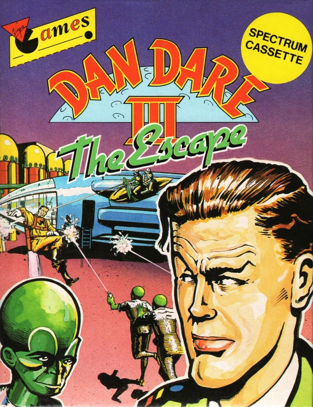
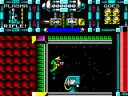

Dan Dare III


{kind=link}

| Publisher: | Virgin |
| Price: | £9.99 Cass, £14.99 Disk |
| Year: | 1990 |
| Source: | CRASH, Issue 73 |

This is the third game in the Dan Dare saga, and whether Virgin are going to leave this as a trilogy will be interesting to see, because this offering is every bit as good as cass, its predecessors. The Mekon’s evil knows no bounds: in his attempt to take over the Earth he has carried out a series of cruel ‘Treenisation’ experiments. All have failed, leaving the unfortunate victims as twisted mutations of their former selves. What he needs is a human subject to experiment on, and that human is... of course Dan Dare.
Ol’ green bonce’s minions kidnap the good Colonel in his sleep, and Dan wakes up In a Scientific Satellite in orbit around Venus. Uttering ‘Never say die...’ he’s up and about before you can say ‘Mekon is Master of Mekonta’ and intent on escape. A ship stands ready to whisk him back to Earth. The only problem is it needs refuelling, and so braving the mutated creatures Dan, armed with a pulse rifle, scours the satellite’s levels for the 50lb of fuel he needs to escape. Travel between levels is via teleport.

As in R-Type the longer you hold down the fire button the larger the energy bolt Dan’s rifle kicks out. Ammo is limited, but can be picked up along with other weapons from a handy computer terminal in the store level. Depending on your power level, which increases with every alien shot, you can pick up ‘Nuke’ smart bombs, bouncing bombs, extra lives (to a maximum of four) and of of course extra ammo. Fuel can also be found for your jet pack (which needs constant replenishment), as well as for the escape ship. The Mekon and his clones are heavily in evidence, and Dan will need all the firepower and cunning he can muster to make his getaway.
The first two parts of the Dan Dare saga were excellent, and I’m glad to say the third is just as good. Colourful sprites abound, and with as near as damn it zero colour clash. The plot is as involved as before and the action is just as hot. Fans of Dan Dare, and count me in, should take a look at this game.
MARK — 92%
Dan Dare was good, Dan Dare II wasn’t bad but Dan Dare III, wow! The last time I saw that much colour on screen at one time was on Cybernoid. Pretty impressive don’t you think? Yup, but it can get a little confusing when you’re blasting away lots of aliens and all you can see is COLOUR! Some of the graphics seem to have suffered though, Dan Dare must have had a face drop instead of a face lift! He’s swopped his detailed features for a pixel for an eye and a blob for a nose. All the other characters in the game are quite detailed though, especially the Mekon. The game is deceptively simple in plot, but very playable. The warping sequence between levels is also pretty impressive, but hard on the eyes. Flying through a trail of squares on a starry background — phew! Dan Dare III is one of the best games this issue, have a look for yourself.
NICK — 90%
RATING
Even without the faithful Digby, Dan Dare is as big a hit as ever.
| Presentation: | 86% |
| Graphics: | 90% |
| Sound: | 85% |
| Playability: | 86% |
| Addictivity: | 88% |
| Overall: | 92% |